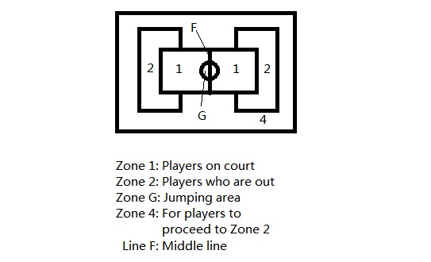

General Rules For MSD 2015
MSD 2014 is an event open to MALAYSIAN undergraduate and postgraduate students only.
Each participant must register online via the appropriate forms before 28th February 2015, 23:59. Each participant must also confirm their attendance and registration at the registration booth at 8:00 a.m. on 15th March 2015.
Each person can only take part in ONE ball game and/or Sukaneka game while the “100m individual track” and "4*100 track" are open for everyone including those who are participating in ball games. Participation in both track games are acceptable.
For games which have more than one player, all teammates should fill in the form as well and remember to fill in the same "team name".
You will be certified as a qualified participant only when you have received a confirmation E-MAIL latest by 3rd March 2015 that confirms your registration and the games you are participating in after on-line registration.
Each participant has to pay a registration fee of $10 (regardless of number of games joined) for T-shirt & lunch. Payment should be made on the day of MSD.
All players are required to wear PROPER SPORTS ATTIRE when they come for the competition.
Please refer to the attachments for the rules & regulations for each game which will be uploaded soon. Please notify that some games have limitations on number of teams so, do register ASAP.
The committee reserves the rights to amend any rules and regulations.
Badminton Rules For MSD 2015
Women double and men singles are each open for 8 teams. Men double and mixed double are each open for 16 teams. First come first serve. If there are less than 4 teams register for the game, the game will be cancelled.
One player can only participate in maximum 2 categories of competition, whereby male can participate in men single OR men double AND/OR mixed double & female can participate in women double AND mixed double.
Players are required to bring own racquets for the match. Only shuttlecocks are provided.
The match will be conducted in knockout.
Score of 21 will be play for all matches. Players have to switch sides when the leading player reaches 10 points.
Each match will have only 1 set of playing. Only final will have 3 sets of playing.
If the players do not report themselves at the court 5 minutes after the match commences, the respective players will be considered as the loser.
The umpire’s decision is final.
5 on 5 Basketball (male) Rules For MSD 2015
This competition is only open for 6 teams. The competition will be cancelled if there are less than 4 teams register.
Maximum 7 players per team, each match will be conducted as two parts. First half 10 minutes, short break 2 minutes and the second half 10 minutes.
All teams will be split into 2 groups (1 group 3 teams maximum). Each team in each group will play with the other team in the same group. Winner gets 2 points, draw each team can get 1 point, loser gets 0 point. If there are two highest points in one group, the victory belongs to the team who get more points in the match. The highest cumulative total points from each group will proceed to the final.
If there are less than 5 players at the court 5 minutes after the match commence, the respective team will be consider as the loser of that particular match.
All players in each team should wear the same color tees. If two teams choose the same color tees, one of the teams will be requested to change into other color of tees.
A game will be conducted as a normal basketball match for fouls and calculating points.
Players can be swapped unlimitedly but only when fouls, out ball, or game pause.
Each team can request for a maximum one minutes pausing.
Possession will be changed to the opposite if you score.
When a player had fouled for 5 times, he cannot play anymore until the game ends.
The umpire’s decision is final.
Dodgeball Rules For MSD 2015

No. of player: i) Group : 8 with at least 2 female. ii) On court: Any 6 with at least 1 female.
Each game: 2 matches of 5 minutes with a 2 minutes interval in between.
Each team can decide the players on court before each match. However, substitution of player is not allowed during the game unless someone is injured. A player who has been replaced takes no further part in the match.
The number of players left in Zone 1 after each match ends will be the score of the particular match. The final score of each game will be the sum of score of two matches.
When every match starts, one player from each team must be at jumping area to snatch the ball.
If the player is hit by the ball on any part of his body, the player is considered OUT.
If the ball hit other players after the first hit, only the first player is considered OUT.
Any ball that hit the players after it bounces from the ground is not counted.
If the player can catch the ball thrown by the opponent team, the player is not considered out. However, if the ball drop to the ground after catching, the player is still considered out.
HEADSHOT is considered foul, whether intentionally or not. The possession of the ball from the thrower’s side belong to the opponent team.
Players are not allowed to pass the ball to their teammate in the same zone ( ie: Zone 1 to Zone 1), otherwise the possession of the ball will be lost to the opponent team.
Players are only allowed to pass the ball to their teammate in the different zone (ie: Zone 1 to Zone 2). The limit of ball passing is 4.
The ball holder only can hold the ball for 5 seconds, otherwise the possession of the ball will be lost to the opponent team.
If any player cause the ball crossing the boundary line of zone 2, the possession of the ball will be lost to the opponent team.
Any player that cross the boundary lines of their own zone, the possession of the balls will be lost to the opponent team.
When a ball is thrown while the ending whistle is blown, the player hit by this ball is still considered out.
There will be no suspension when a player is out. Therefore, the player who is out should quickly proceed to the zone 2 through zone 4.
Referees’ decision is final and cannot be disputed.
Futsal Rules For MSD 2015
This competition is for male players only.
Each team consists of 7 members, with 5 in play (including a goalkeeper) and 2 substitutes.
Match will be held at the multipurpose court in Sports & Recreational Centre, NTU.
Each match will last for 14 minutes, with 7 minutes in first half and 7 minutes in second half. 1 minute break will be given between both halves.
Teams will be divided into groups, following which the top teams from each group will move on to finals.
Matches which end in a tie during the knockout stage will be decided by penalty shootout.
Coin toss will decide which team starts the match.
When ball is sent out of the playing area, play will be restarted by a kick-in by the opposing team at the point where the ball crossed the side line; or at the corner if the ball crossed the goal line.
Fouls for misconduct/unfair play will be passed down at the discretion of the referee in charge.
All players in each team should wear the same color tees. If two teams choose the same color tees, one of the teams may be requested to change into other color of tees.
The referee’s decision regarding fouls and match outcomes are final and not to be disputed.
Track & Field (100m) Rules For MSD 2015
This game is open for men, if there are less than 3 participants, the game will be cancelled.
There will be two rounds for the game, ie. Preliminary Round and Final Round.
Preliminary Round will be conducted in the morning after the Opening Ceremony and Final Round will be conducted after the final ball games.
If there are more than 6 participants in a category, then several preliminary rounds will be conducted and SIXTH of the quickest participants will enter the Final Round.
Each participant has to report to the organization 15mins before the event start.
All runners are to remain behind the starting line until the signal to start is given. In the event of a false start, there will be a restart. Any participants committing more than 1 false start will be disqualified.
All runners must remain within their pre-assigned lane from start to finish.
The first runner whose torso reaches the vertical plane of the closest edge of the finish line is the winner.
Participants of track and field are allowed to participate only ONE ballgame.
Track & Field (4*100m) Rules For MSD 2015
The group combination must be 2 men and 2 women in a group, if there are less than 3 groups participants, the game will be cancelled.
There will be two rounds for the game, ie. Preliminary Round and Final Round.
Preliminary Round will be conducted in the morning after the Opening Ceremony and Final Round will be conducted after the final ball games.
If there are more than 6 teams of participants in a category, then several preliminary rounds will be conducted and SIX of the quickest teams will enter the Final Round.
Each group has to report to the organization 15mins before the event start.
All runners are to remain behind the starting line until the signal to start is given. In the event of a false start, there will be a restart. Any participants committing more than 1 false start will be disqualified.
All runners must remain within their pre-assigned lane from start to finish.
The first runner whose torso reaches the vertical plane of the closest edge of the finish line is the winner.
Participants of track and field are allowed to participate only ONE ballgame.